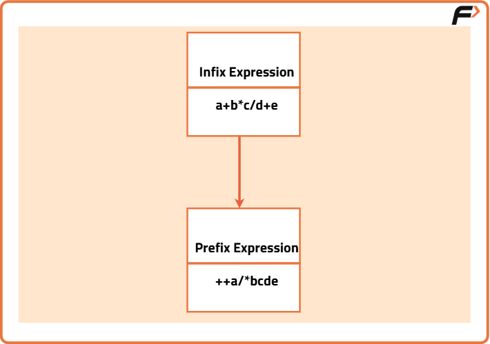

Infix to Prefix
Problem Statement: Given an infix expression, Your task is to convert the given infix expression to a prefix expression.
Examples
Example 1: Input: x + y * z / w + u Output: ++x/*yzwu Explanation: The infix expression "x + y * z / w + u" is converted to prefix form as "++x/*yzwu" by applying the rules of infix to prefix conversion. Example 2: Input: a + b Output: +ab Explanation: The infix expression "a + b" is converted to prefix form as "+ab".
Disclaimer: It's highly recommend trying to solve it before looking at the solution.
Approach
Algorithm
- What is an Infix Expression?
- The traditional method of writing mathematical expressions is called infix expressions.
- It is written as
. The operator is placed between two operands (e.g., A+B or (A*B)/Q). - Infix expressions are easy to understand and evaluate for humans but hard for computers to parse due to operator precedence, associativity rules, and parentheses.
- To make parsing easier for computers, we use postfix and prefix notations.
- What is a Prefix Expression?
- In a prefix expression, the operator is placed before the operands.
- The expression is in the form
. - Prefix expressions work similarly to postfix expressions. While evaluating, operators are applied immediately to the operands on the right of the operator.
- Prefix expressions are also called Polish notation.
- Approach to Convert Infix Expression to Prefix:
- Reverse the given infix expression.
- Scan the expression from left to right.
- When an operand is encountered, print it directly.
- If the operator is encountered and the stack is empty, push the operator into the stack.
- If the incoming operator has higher precedence than the top of the stack, push it into the stack.
- If the incoming operator has the same precedence as the top of the stack, push it into the stack.
- If the incoming operator has lower precedence than the top of the stack, pop and print the top of the stack. Then, test the incoming operator against the top of the stack again and continue popping operators from the stack until it finds an operator with lower or the same precedence.
- If the incoming operator has the same precedence as the top of the stack and the incoming operator is '^', pop the top of the stack until the condition is met. If not, push the '^' operator.
- If the operator is ')', push it into the stack.
- If the operator is '(', pop all operators from the stack until a ')' is encountered.
- If the top of the stack is ')', push the operator onto the stack.
- At the end of the expression, pop and print all remaining operators from the stack.
- Finally, reverse the output and print it as the prefix expression.

Code
#include <bits/stdc++.h>
using namespace std;
// Function to check if a character is an operator
bool isOperator(char c) {
return (!isalpha(c) && !isdigit(c)); // If the character is neither alphabetic nor numeric, it's an operator
}
// Function to return the precedence of operators
int getPriority(char C) {
if (C == '-' || C == '+') // Addition and subtraction have lowest precedence
return 1;
else if (C == '*' || C == '/') // Multiplication and division have higher precedence
return 2;
else if (C == '^') // Exponent operator has highest precedence
return 3;
return 0;
}
// Function to convert infix expression to postfix expression
string infixToPostfix(string infix) {
infix = '(' + infix + ')'; // Add parentheses to handle edge cases
int l = infix.size();
stack<char> char_stack; // Stack to store operators
string output; // String to store the resulting postfix expression
for (int i = 0; i < l; i++) {
// If the scanned character is an operand, add it to output
if (isalpha(infix[i]) || isdigit(infix[i]))
output += infix[i];
// If the scanned character is ‘(’, push it to the stack
else if (infix[i] == '(')
char_stack.push('(');
// If the scanned character is ‘)’, pop and output from the stack until an ‘(‘ is encountered
else if (infix[i] == ')') {
while (char_stack.top() != '(') {
output += char_stack.top();
char_stack.pop();
}
char_stack.pop(); // Remove '(' from the stack
}
// If an operator is found
else {
if (isOperator(char_stack.top())) {
if (infix[i] == '^') {
while (getPriority(infix[i]) <= getPriority(char_stack.top())) {
output += char_stack.top();
char_stack.pop();
}
} else {
while (getPriority(infix[i]) < getPriority(char_stack.top())) {
output += char_stack.top();
char_stack.pop();
}
}
// Push current operator on stack
char_stack.push(infix[i]);
}
}
}
// Pop all remaining elements from the stack
while (!char_stack.empty()) {
output += char_stack.top();
char_stack.pop();
}
return output; // Return the postfix expression
}
// Function to convert infix expression to prefix expression
string infixToPrefix(string infix) {
int l = infix.size();
// Reverse the infix expression
reverse(infix.begin(), infix.end());
// Replace '(' with ')' and vice versa
for (int i = 0; i < l; i++) {
if (infix[i] == '(') {
infix[i] = ')';
i++;
} else if (infix[i] == ')') {
infix[i] = '(';
i++;
}
}
string prefix = infixToPostfix(infix); // Convert the modified infix to postfix
// Reverse the postfix expression to get the prefix
reverse(prefix.begin(), prefix.end());
return prefix; // Return the prefix expression
}
int main() {
string s = "(p+q)*(c-d)"; // Infix expression
cout << "Infix expression: " << s << endl;
cout << "Prefix Expression: " << infixToPrefix(s) << endl; // Output the prefix expression
return 0;
}Complexity Analysis
Time Complexity: O(N), where N is the length of the infix expression. Each character is processed once.
Space Complexity: O(N), where N is the length of the infix expression. The stack can hold at most N characters in the worst case.